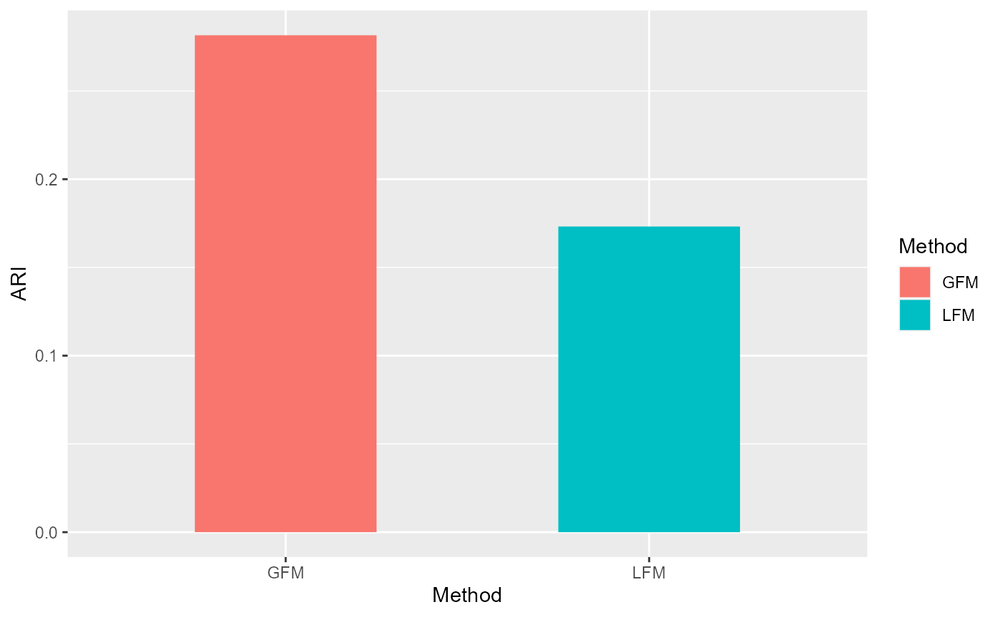

First, we load the ‘GFM’ package and the real data which can be downloaded here. This data is in the format of ‘.Rdata’ that inludes a gene expression matrix ‘X’ with 3460 rows (cells) and 2000 columns (genes), a vector ‘group’ specifying two groups of variable types (‘type’ variable) including ‘gaussian’ and ‘poisson’ and a vector ‘y’ meaning the clusters of cells annotated by experts. We compare the performance of ‘GFM’ and ‘LFM’ in downstream clustering analysis based on the benchchmarked clusters ‘y’.
githubURL <- "https://github.com/feiyoung/GFM/blob/main/vignettes_data/Brain76.Rdata?raw=true"
download.file(githubURL,"Brain76.Rdata",mode='wb')Then load to R
load("Brain76.Rdata")
XList <- list(X[,group==1], X[,group==2])
types <- type
str(XList)
#> List of 2
#> $ : num [1:3460, 1:1000] 0 0 0 0 0 ...
#> ..- attr(*, "dimnames")=List of 2
#> .. ..$ : chr [1:3460] "AAACAAGTATCTCCCA-1" "AAACAATCTACTAGCA-1" "AAACACCAATAACTGC-1" "AAACAGAGCGACTCCT-1" ...
#> .. ..$ : chr [1:1000] "logcount_ENSG00000187608" "logcount_ENSG00000179403" "logcount_ENSG00000162408" "logcount_ENSG00000049245" ...
#> $ : num [1:3460, 1:1000] 0 0 0 0 0 0 0 0 0 2 ...
#> ..- attr(*, "dimnames")=List of 2
#> .. ..$ : chr [1:3460] "AAACAAGTATCTCCCA-1" "AAACAATCTACTAGCA-1" "AAACACCAATAACTGC-1" "AAACAGAGCGACTCCT-1" ...
#> .. ..$ : chr [1:1000] "count_ENSG00000187608" "count_ENSG00000179403" "count_ENSG00000162408" "count_ENSG00000049245" ...
library("GFM")
#> Loading required package: doSNOW
#> Loading required package: foreach
#> Loading required package: iterators
#> Loading required package: snow
#> Loading required package: parallel
#>
#> Attaching package: 'parallel'
#> The following objects are masked from 'package:snow':
#>
#> clusterApply, clusterApplyLB, clusterCall, clusterEvalQ,
#> clusterExport, clusterMap, clusterSplit, makeCluster, parApply,
#> parCapply, parLapply, parRapply, parSapply, splitIndices,
#> stopCluster
#> GFM : Generalized factor model is implemented for ultra-high dimensional data with mixed-type variables.
#> Two algorithms, variational EM and alternate maximization, are designed to implement the generalized factor model,
#> respectively. The factor matrix and loading matrix together with the number of factors can be well estimated.
#> This model can be employed in social and behavioral sciences, economy and finance, and genomics,
#> to extract interpretable nonlinear factors. More details can be referred to
#> Wei Liu, Huazhen Lin, Shurong Zheng and Jin Liu. (2021) <doi:10.1080/01621459.2021.1999818>. Check out our Package website (https://feiyoung.github.io/GFM/docs/index.html) for a more complete description of the methods and analyses
#load("vignettes_data\\Brain76.Rdata")
#ls() # check the variables
set.seed(2023) # set a random seed for reproducibility.We fit the GFM model using ‘gfm’ function.
q <- 15
system.time(
gfm1 <- gfm(XList, types, q= q, verbose = TRUE)
)
#> Starting the varitional EM algorithm...
#> iter = 2, ELBO= -3750461.822684, dELBO=0.998254
#> iter = 3, ELBO= -3554311.076859, dELBO=0.052300
#> iter = 4, ELBO= -3415402.198187, dELBO=0.039082
#> iter = 5, ELBO= -3306452.039078, dELBO=0.031900
#> iter = 6, ELBO= -3217346.647111, dELBO=0.026949
#> iter = 7, ELBO= -3142460.123095, dELBO=0.023276
#> iter = 8, ELBO= -3078271.159787, dELBO=0.020426
#> iter = 9, ELBO= -3022409.845541, dELBO=0.018147
#> iter = 10, ELBO= -2973199.625335, dELBO=0.016282
#> iter = 11, ELBO= -2929410.835170, dELBO=0.014728
#> iter = 12, ELBO= -2890115.681500, dELBO=0.013414
#> iter = 13, ELBO= -2854597.557781, dELBO=0.012290
#> iter = 14, ELBO= -2822292.009491, dELBO=0.011317
#> iter = 15, ELBO= -2792747.001267, dELBO=0.010468
#> iter = 16, ELBO= -2765595.355226, dELBO=0.009722
#> iter = 17, ELBO= -2740535.120688, dELBO=0.009061
#> iter = 18, ELBO= -2717315.275484, dELBO=0.008473
#> iter = 19, ELBO= -2695725.110295, dELBO=0.007945
#> iter = 20, ELBO= -2675586.217373, dELBO=0.007471
#> iter = 21, ELBO= -2656746.357345, dELBO=0.007041
#> iter = 22, ELBO= -2639074.702982, dELBO=0.006652
#> iter = 23, ELBO= -2622458.107292, dELBO=0.006296
#> iter = 24, ELBO= -2606798.143554, dELBO=0.005971
#> iter = 25, ELBO= -2592008.733701, dELBO=0.005673
#> iter = 26, ELBO= -2578014.230523, dELBO=0.005399
#> iter = 27, ELBO= -2564747.853111, dELBO=0.005146
#> iter = 28, ELBO= -2552150.400275, dELBO=0.004912
#> iter = 29, ELBO= -2540169.184545, dELBO=0.004695
#> iter = 30, ELBO= -2528757.142764, dELBO=0.004493
#> Finish the varitional EM algorithm...
#> user system elapsed
#> 93.61 5.28 152.44We conduct the clustering analysis based on the extracted factors by GFM and evaluate the adjusted rand index (ARI) value based on the annotated cluster labels by experts.
hH <- gfm1$hH
library(mclust)
#> Warning: package 'mclust' was built under R version 4.1.3
#> Package 'mclust' version 5.4.10
#> Type 'citation("mclust")' for citing this R package in publications.
set.seed(1)
gmm1 <- Mclust(hH, G=7)
ARI_gfm <- adjustedRandIndex(gmm1$classification, y)We fit linear factor model using same number of factors.
fac <- Factorm(X, q=15)
hH_lfm <- fac$hH
set.seed(1)
gmm2 <- Mclust(hH_lfm, G=7)
ARI_lfm <- adjustedRandIndex(gmm2$classification, y)Compare with the ARIs by visualization.
library(ggplot2)
#> Warning: package 'ggplot2' was built under R version 4.1.3
df1 <- data.frame(ARI= c(ARI_gfm,ARI_lfm),
Method =factor(c('GFM', "LFM")))
ggplot(data=df1, aes(x=Method, y=ARI, fill=Method)) + geom_bar(position = "dodge", stat="identity",width = 0.5)